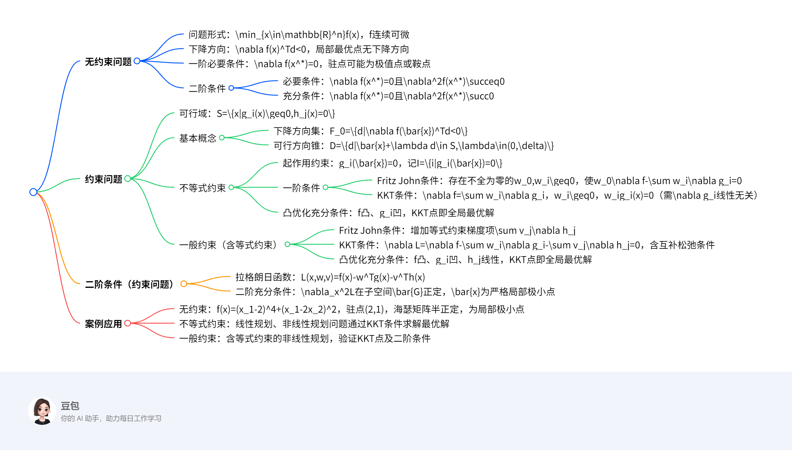

最优条件¶
总览¶
一段话总结¶
文档主要介绍最优化问题的最优性条件，包括无约束问题和约束问题。无约束问题中，一阶必要条件要求梯度为零，二阶条件通过海瑟矩阵的正定性判断局部极值（正定则为极小点）；约束问题分为不等式和一般约束，引入可行方向、下降方向等概念，Fritz John条件和KKT条件是核心一阶必要条件，其中KKT条件需满足互补松弛性，凸优化问题中KKT条件还是全局最优的充分条件。此外，还涉及二阶充分条件及具体案例求解。
思维导图¶

详细总结¶
一、无约束优化问题¶
问题形式：\(\min_{x\in\mathbb{R}^n}f(x)\)，其中\(f\)为连续可微函数。
1. 下降方向¶
- 定义：若存在向量\(d\)使\(\nabla f(x)^Td<0\)，则\(d\)为\(f\)在点\(x\)处的下降方向。
- 性质：若\(x\)为局部最优点，则不存在下降方向。
2. 一阶最优性条件（必要条件）¶
- 条件：若\(x^*\)是局部极小点，则\(\nabla f(x^*)=0\)。
- 驻点（稳定点）：满足\(\nabla f(x)=0\)的点，可能是极小点、极大点或鞍点（如\(f(x)=x^3\)在\(x=0\)处为鞍点）。
3. 二阶最优性条件¶
- 必要条件：若\(x^*\)是局部极小点，则\(\nabla f(x^*)=0\)且海瑟矩阵\(\nabla^2f(x^*)\)半正定（\(\nabla^2f(x^*)\succeq0\)）。
- 充分条件：若\(\nabla f(x^*)=0\)且\(\nabla^2f(x^*)\)正定（\(\nabla^2f(x^*)\succ0\)），则\(x^*\)是局部极小点。
- 案例：
- \(f(x)=(x_1-2)^4+(x_1-2x_2)^2\)，驻点\((2,1)\)，海瑟矩阵为\(\begin{pmatrix}2&-4\\-4&8\end{pmatrix}\)（半正定），故为局部极小点。
二、约束优化问题¶
可行域：\(S=\{x|g_i(x)\geq0,i=1,\dots,m;h_j(x)=0,j=1,\dots,l\}\)。
1. 基本概念¶
- 下降方向集：\(F_0=\{d|\nabla f(\bar{x})^Td<0\}\)。
- 可行方向锥：\(D=\{d|\exists\delta>0,\bar{x}+\lambda d\in S,\forall\lambda\in(0,\delta)\}\)。
2. 不等式约束问题（\(s.t.\ g_i(x)\geq0\)）¶
- 起作用约束：\(g_i(\bar{x})=0\)（记\(I=\{i|g_i(\bar{x})=0\}\)），否则为不起作用约束。
- 一阶必要条件：
- Fritz John条件：存在不全为零的\(w_0\geq0\)和\(w_i\geq0(i\in I)\)，使\(w_0\nabla f(\bar{x})-\sum_{i\in I}w_i\nabla g_i(\bar{x})=0\)。
- KKT条件（需\(\{\nabla g_i(\bar{x})\}\)线性无关）：
- \(\nabla f(\bar{x})=\sum_{i\in I}w_i\nabla g_i(\bar{x})\)，
- \(w_i\geq0\)，
- 互补松弛条件：\(w_ig_i(\bar{x})=0\)。
- 凸优化充分条件：若\(f\)为凸函数、\(g_i\)为凹函数，且KKT条件成立，则\(\bar{x}\)为全局最优解。
3. 一般约束问题（含等式约束\(h_j(x)=0\)）¶
- Fritz John条件：存在不全为零的\(w_0\geq0\)、\(w_i\geq0(i\in I)\)和\(v_j\)，使
\(\(w_0\nabla f(\bar{x})-\sum_{i\in I}w_i\nabla g_i(\bar{x})-\sum_{j=1}^lv_j\nabla h_j(\bar{x})=0.\)\) - KKT条件：
- \(\nabla L(\bar{x},w,v)=0\)（\(L=f-w^Tg-v^Th\)为拉格朗日函数），
- \(w_i\geq0\)，\(w_ig_i(\bar{x})=0\)，
- \(h_j(\bar{x})=0\)。
- 凸优化充分条件：若\(f\)凸、\(g_i\)凹、\(h_j\)线性，且KKT条件成立，则\(\bar{x}\)为全局最优解。
三、二阶最优性条件（约束问题）¶
- 拉格朗日函数：\(L(x,w,v)=f(x)-w^Tg(x)-v^Th(x)\)。
- 二阶充分条件：若存在\((\bar{x},\bar{w},\bar{v})\)满足KKT条件，且\(\nabla_x^2L(\bar{x},\bar{w},\bar{v})\)在子空间
\(\(\bar{G}=\{d|\nabla g_i(\bar{x})^Td=0(w_i>0),\nabla g_i(\bar{x})^Td\geq0(w_i=0),\nabla h_j(\bar{x})^Td=0\}\)\)
上正定，则\(\bar{x}\)为严格局部极小点。
四、关键案例¶
| 问题类型 | 案例 | 结论 |
|---|---|---|
| 无约束 | \(f(x)=x_1^2-6x_1x_2+5x_2^2\) | 驻点\((0,0)\)，海瑟矩阵正定，为全局极小点 |
| 不等式约束 | \(\min (x_1-1)^2+x_2,\ s.t.\ -x_1-x_2+2\geq0,\ x_2\geq0\) | KKT点\((1,0)\)，满足互补松弛条件，为最优解 |
| 一般约束（含等式） | \(\min x_1,\ s.t.\ 3(x_1-3)^2+x_2\geq0,\ (x_1-3)^2+x_2^2=10\) | \(x^{(4)}=(3-\sqrt{10},0)\)满足KKT条件且海瑟矩阵正定，为局部极小点 |
关键问题及答案¶
1. 无约束问题中，驻点、局部极小点和全局极小点的关系是什么？¶
答案：
- 驻点是梯度为零的点（\(\nabla f(x)=0\)），可能是局部极小点、局部极大点或鞍点（如\(f(x)=x^3\)在\(x=0\)处）。
- 局部极小点一定是驻点（一阶必要条件），但驻点不一定是局部极小点。
- 全局极小点是特殊的局部极小点，若函数为凸函数（如正定二次函数），则驻点即全局极小点。
2. 约束优化中，KKT条件与Fritz John条件的主要区别是什么？¶
答案：
- Fritz John条件允许乘子\(w_0\)为零，可能导致无法排除“平凡解”（如所有乘子为零），且不要求约束梯度线性无关。
- KKT条件要求\(\{\nabla g_i(\bar{x})\}\)线性无关，且强制\(w_0=1\)（即\(f\)的梯度非零），保证乘子\(w_i\geq0\)对应实际约束，更具实用性。
- 核心区别：KKT条件通过线性无关假设排除了\(w_0=0\)的平凡情况，直接关联目标函数和约束梯度。
3. 如何利用二阶条件判断约束问题的局部最优性？¶
答案：
- 步骤：
1. 验证点是否为KKT点（满足一阶必要条件）。
2. 计算拉格朗日函数的二阶导数矩阵（海瑟矩阵）\(\nabla_x^2L\)。
3. 确定子空间\(\bar{G}\)（由起作用约束和等式约束的梯度方向决定）。
4. 若\(\nabla_x^2L\)在\(\bar{G}\)上正定，则该点为严格局部极小点；若存在负特征值，则非局部极小点。
- 案例：在约束问题\(\min x_1,\ s.t.\ 3(x_1-3)^2+x_2\geq0,\ (x_1-3)^2+x_2^2=10\)中，\(x^{(4)}=(3-\sqrt{10},0)\)的\(\nabla_x^2L\)正定，故为局部极小点。
无约束优化问题的极值条件¶
一、核心概念与理论¶
1. 下降方向¶
- 定义：对于可微函数 \( f(x) \) 和点 \( x \in \mathbb{R}^n \)，若存在向量 \( d \) 满足 \( \nabla f(x)^T d < 0 \)，则称 \( d \) 为 \( f \) 在点 \( x \) 处的下降方向。
- 意义：若存在下降方向，则沿该方向移动可使函数值减小，因此局部最优点处不存在下降方向。
2. 一阶必要条件¶
- 条件：若 \( x^* \) 是局部极小点，则 \( \nabla f(x^*) = 0 \)（梯度为零）。
- 驻点（稳定点）：满足 \( \nabla f(x) = 0 \) 的点，可能是极小点、极大点或鞍点（如 \( f(x) = x^3 \) 在 \( x=0 \) 处为鞍点）。
- 证明思路：通过泰勒展开分析任意方向 \( v \) 上的函数变化，利用局部最优性推导出梯度必须为零。
3. 二阶最优性条件¶
- 必要条件：若 \( x^* \) 是局部极小点，则 \( \nabla f(x^*) = 0 \) 且海瑟矩阵 \( \nabla^2 f(x^*) \) 半正定（\( \nabla^2 f(x^*) \succeq 0 \)）。
- 充分条件：若 \( \nabla f(x^*) = 0 \) 且 \( \nabla^2 f(x^*) \) 正定（\( \nabla^2 f(x^*) \succ 0 \)），则 \( x^* \) 是严格局部极小点。
- 鞍点：若海瑟矩阵既有正特征值又有负特征值，驻点为鞍点（如 \( f(x) = x_1 x_2 \) 在 \( (0,0) \) 处）。
4. 凸优化的一阶充要条件¶
- 定理：若 \( f(x) \) 是可微凸函数，则 \( \bar{x} \) 为全局极小点的充要条件是 \( \nabla f(\bar{x}) = 0 \)。
- 证明思路：利用凸函数性质 \( f(x) \geq f(\bar{x}) + \nabla f(\bar{x})^T (x-\bar{x}) \)，结合梯度为零可证全局最优性。
二、求解方法¶
1. 一阶条件求解步骤¶
- 计算目标函数的梯度 \( \nabla f(x) \)。
- 令 \( \nabla f(x) = 0 \)，求解方程组得到驻点。
- 结合函数性质或二阶条件判断驻点是否为极值点。
2. 二阶条件判断步骤¶
- 计算驻点处的海瑟矩阵 \( \nabla^2 f(x^*) \)。
- 分析海瑟矩阵的正定性：
- 若所有特征值 \( > 0 \)，则为严格局部极小点；
- 若所有特征值 \( \geq 0 \)，则为局部极小点（可能退化）；
- 若存在正、负特征值，则为鞍点。
三、示例解析¶
示例1：无约束二次函数优化¶
问题：求 \( f(x) = 5x_1^2 - 6x_1x_2 + 5x_2^2 \) 的极小点。
求解步骤：
1. 计算梯度：
[
\nabla f(x) = \begin{pmatrix} 10x_1 - 6x_2 \ -6x_1 + 10x_2 \end{pmatrix}
]
2. 求解一阶条件：
令 \( \nabla f(x) = 0 \)，得方程组：
[
\begin{cases} 10x_1 - 6x_2 = 0 \ -6x_1 + 10x_2 = 0 \end{cases} \implies x_1 = x_2 = 0
]
驻点为 \( x^* = (0, 0)^T \)。
3. 计算海瑟矩阵并判断正定性：
[
\nabla^2 f(x) = \begin{pmatrix} 10 & -6 \ -6 & 10 \end{pmatrix}
]
特征值计算：\( \lambda = 10 \pm 6 \)，即 \( \lambda_1 = 16 \), \( \lambda_2 = 4 \)，均为正数，故 \( \nabla^2 f(x^*) \) 正定。
结论：\( x^* = (0, 0)^T \) 是全局极小点。
示例2：含鞍点的三次函数¶
问题：分析 \( f(x) = x_1^3 - 3x_1x_2^2 \) 的驻点性质。
求解步骤：
1. 计算梯度：
[
\nabla f(x) = \begin{pmatrix} 3x_1^2 - 3x_2^2 \ -6x_1x_2 \end{pmatrix}
]
2. 求解一阶条件：
令 \( \nabla f(x) = 0 \)，得：
[
\begin{cases} x_1^2 = x_2^2 \ x_1x_2 = 0 \end{cases} \implies x^ = (0, 0)^T
]
3. 计算海瑟矩阵：
[
\nabla^2 f(x) = \begin{pmatrix} 6x_1 & -6x_2 \ -6x_2 & -6x_1 \end{pmatrix} \implies \nabla^2 f(0,0) = \begin{pmatrix} 0 & 0 \ 0 & 0 \end{pmatrix}
]
海瑟矩阵为零矩阵，无法通过二阶条件判断，需结合高阶导数或函数性质分析。
结论*：\( (0, 0) \) 是驻点，且为鞍点（沿 \( x_1 \) 轴方向函数值为 \( x_1^3 \)，既有增大也有减小方向）。
四、重点总结¶
- 无约束优化核心逻辑：通过梯度（一阶条件）找驻点，再用海瑟矩阵（二阶条件）判断极值类型。
- 凸函数特殊性：凸函数的驻点即全局极小点，无需二阶条件（一阶充要条件）。
- 关键公式：
- 下降方向：\( \nabla f(x)^T d < 0 \)
- 一阶必要条件：\( \nabla f(x^*) = 0 \)
- 二阶充分条件：\( \nabla f(x^*) = 0 \) 且 \( \nabla^2 f(x^*) \succ 0 \)
约束极值问题的最优性条件¶
一、核心概念与理论¶
1. 约束极值问题的基本形式¶
- 一般形式：
[ \begin{cases} \min & f(x) \ \text{s.t.} & g_i(x) \geq 0 (i=1,2,\cdots,m) \ & h_j(x) = 0 (j=1,2,\cdots,l) \end{cases} ]
其中，\(S = \{x \mid g_i(x) \geq 0, h_j(x) = 0\}\) 称为可行域，\(g_i(x) \geq 0\) 为不等式约束，\(h_j(x) = 0\) 为等式约束。
2. 关键方向定义¶
- 下降方向：若存在向量 \(d\) 使 \(f(\bar{x} + \lambda d) < f(\bar{x})\)（\(\lambda > 0\) 充分小），则 \(d\) 为 \(f\) 在 \(\bar{x}\) 处的下降方向，等价于 \(\nabla f(\bar{x})^T d < 0\)。
- 可行方向：若存在 \(\delta > 0\) 使 \(\bar{x} + \lambda d \in S\)（\(\lambda \in (0, \delta)\)），则 \(d\) 为可行域 \(S\) 在 \(\bar{x}\) 处的可行方向。
3. 几何最优性条件¶
- 定理：若 \(\bar{x}\) 是局部最优解，则下降方向集与可行方向集的交集为空（\(F_0 \cap D = \emptyset\)）。
- 直观意义：局部最优解处，不存在同时使函数值下降且保持可行的方向。
二、不等式约束问题的一阶条件¶
1. 起作用约束与松弛约束¶
- 起作用约束：若 \(g_i(\bar{x}) = 0\)，则称约束 \(g_i(x) \geq 0\) 在 \(\bar{x}\) 处为起作用约束（紧约束），记 \(I = \{i \mid g_i(\bar{x}) = 0\}\)。
- 松弛约束：若 \(g_i(\bar{x}) > 0\)，则称约束 \(g_i(x) \geq 0\) 在 \(\bar{x}\) 处为松弛约束（非紧约束）。
2. Fritz John条件¶
- 条件：若 \(\bar{x}\) 是局部最优解，则存在不全为零的非负数 \(w_0, w_i (i \in I)\)，使得：
[ w_0 \nabla f(\bar{x}) - \sum_{i \in I} w_i \nabla g_i(\bar{x}) = 0 ] - 局限性：允许 \(w_0 = 0\)，可能导致乘子全为零的平凡解，实际应用中需结合其他条件。
3. KKT条件（Karush-Kuhn-Tucker条件）¶
- 条件（需起作用约束梯度线性无关）：
- 梯度条件：\(\nabla f(\bar{x}) = \sum_{i=1}^m w_i \nabla g_i(\bar{x})\)（\(w_i = 0\) 对应松弛约束）；
- 互补松弛条件：\(w_i g_i(\bar{x}) = 0\)（起作用约束 \(w_i \geq 0\)，松弛约束 \(w_i = 0\)）；
- 非负性：\(w_i \geq 0\)。
- 意义：是Fritz John条件的强化，排除 \(w_0 = 0\) 的平凡解，成为约束优化的核心必要条件。
4. Gordan定理（引理）¶
- 内容：线性不等式组 \(A x < 0\) 有解的充要条件是不存在非零向量 \(y \geq 0\) 使得 \(A^T y = 0\)。
- 作用：用于证明Fritz John条件和KKT条件的理论基础，通过凸集分离定理推导。
三、一般约束问题的最优性条件（含等式约束）¶
1. Fritz John条件（扩展）¶
- 条件：若 \(\bar{x}\) 是局部最优解，存在不全为零的非负数 \(w_0, w_i (i \in I)\) 和实数 \(v_j\)，使得：
[ w_0 \nabla f(\bar{x}) - \sum_{i \in I} w_i \nabla g_i(\bar{x}) - \sum_{j=1}^l v_j \nabla h_j(\bar{x}) = 0 ]
2. KKT条件（扩展）¶
- 拉格朗日函数：\(L(x, w, v) = f(x) - \sum_{i=1}^m w_i g_i(x) - \sum_{j=1}^l v_j h_j(x)\)。
- 条件：
- 梯度条件：\(\nabla_x L(\bar{x}, w, v) = 0\)；
- 互补松弛条件：\(w_i g_i(\bar{x}) = 0\)，\(w_i \geq 0\)；
- 等式约束：\(h_j(\bar{x}) = 0\)。
3. 凸优化的充分条件¶
- 定理：若 \(f\) 是凸函数，\(g_i\) 是凹函数，\(h_j\) 是线性函数，且KKT条件成立，则 \(\bar{x}\) 是全局最优解。
- 证明思路：利用凸函数性质 \(f(x) \geq f(\bar{x}) + \nabla f(\bar{x})^T (x-\bar{x})\)，结合约束条件推导全局最优性。
四、二阶最优性条件（约束问题）¶
1. 拉格朗日函数的二阶导数¶
- 海瑟矩阵：\(\nabla_x^2 L(\bar{x}, w, v)\) 表示拉格朗日函数在 \(\bar{x}\) 处的二阶导数矩阵。
2. 二阶充分条件¶
- 条件：若 \(\bar{x}\) 满足KKT条件，且 \(\nabla_x^2 L(\bar{x}, w, v)\) 在子空间
[ \bar{G} = \left{ d \mid \begin{array}{l} \nabla g_i(\bar{x})^T d = 0 (i \in I, w_i > 0) \ \nabla g_i(\bar{x})^T d \geq 0 (i \in I, w_i = 0) \ \nabla h_j(\bar{x})^T d = 0 (j=1,\cdots,l) \end{array} \right} ]
上正定，则 \(\bar{x}\) 是严格局部极小点。
五、求解方法与示例¶
1. 基于KKT条件的求解步骤¶
- 确定起作用约束：假设部分约束为起作用约束（\(g_i(x) = 0\)），其余为松弛约束（\(g_i(x) > 0\)，对应 \(w_i = 0\)）。
- 建立KKT方程组：
- 对起作用约束 \(i \in I\)，保留 \(w_i \geq 0\) 并求解梯度条件；
- 对松弛约束 \(i \notin I\)，令 \(w_i = 0\)。
- 验证可行性与最优性：检查解是否满足所有约束，并用二阶条件或问题性质判断是否为极值点。
2. 示例：不等式约束优化问题¶
问题：
[
\begin{cases}
\min & (x_1 - 1)^2 + x_2 \
\text{s.t.} & -x_1 - x_2 + 2 \geq 0 (g_1(x)) \
& x_2 \geq 0 (g_2(x))
\end{cases}
]
求解步骤：
1. 计算梯度：
[
\nabla f(x) = \begin{pmatrix} 2(x_1 - 1) \ 1 \end{pmatrix}, \quad \nabla g_1(x) = \begin{pmatrix} -1 \ -1 \end{pmatrix}, \quad \nabla g_2(x) = \begin{pmatrix} 0 \ 1 \end{pmatrix}
]
2. 假设起作用约束：
- 情况1：\(g_1(x) = 0\) 且 \(g_2(x) = 0\)（即 \(x_1 + x_2 = 2\) 且 \(x_2 = 0\)），解得 \(x_1 = 2\)，\(x_2 = 0\)，即 \(\bar{x} = (2, 0)^T\)。
- 建立KKT方程：
[
\nabla f(\bar{x}) = w_1 \nabla g_1(\bar{x}) + w_2 \nabla g_2(\bar{x}) \implies \begin{pmatrix} 2(2-1) \ 1 \end{pmatrix} = w_1 \begin{pmatrix} -1 \ -1 \end{pmatrix} + w_2 \begin{pmatrix} 0 \ 1 \end{pmatrix}
]
解得：\(2 = -w_1\)，\(1 = -w_1 + w_2\)，显然 \(w_1 = -2 < 0\)，不满足非负性，舍去。
- 情况2：\(g_1(x) = 0\) 且 \(g_2(x) > 0\)（即 \(x_2 > 0\)，对应 \(w_2 = 0\)），解得 \(x_1 + x_2 = 2\)，代入目标函数：
[
f(x) = (x_1 - 1)^2 + (2 - x_1) = x_1^2 - 2x_1 + 1 + 2 - x_1 = x_1^2 - 3x_1 + 3
]
求导得 \(2x_1 - 3 = 0 \implies x_1 = 1.5\)，\(x_2 = 0.5\)，即 \(\bar{x} = (1.5, 0.5)^T\)。
- 验证KKT条件：
[
\nabla f(\bar{x}) = \begin{pmatrix} 1 \ 1 \end{pmatrix}, \quad w_1 \nabla g_1(\bar{x}) = w_1 \begin{pmatrix} -1 \ -1 \end{pmatrix}
]
由梯度条件得 \(w_1 = -1 < 0\)，不满足非负性，舍去。
- 情况3：\(g_1(x) > 0\) 且 \(g_2(x) = 0\)（即 \(x_1 + x_2 < 2\) 且 \(x_2 = 0\)，对应 \(w_1 = 0\)），此时问题退化为无约束优化：
[
f(x) = (x_1 - 1)^2 + 0 \implies \nabla f(x) = 2(x_1 - 1) = 0 \implies x_1 = 1, x_2 = 0
]
即 \(\bar{x} = (1, 0)^T\)。
- 验证KKT条件：
[
\nabla f(\bar{x}) = \begin{pmatrix} 0 \ 1 \end{pmatrix}, \quad w_2 \nabla g_2(\bar{x}) = w_2 \begin{pmatrix} 0 \ 1 \end{pmatrix}
]
由梯度条件得 \(w_2 = 1 \geq 0\)，互补松弛条件 \(w_2 g_2(\bar{x}) = 1 \times 0 = 0\)，满足所有条件。
3. 结论：唯一满足KKT条件的解为 \(\bar{x} = (1, 0)^T\)，且由于目标函数为凸函数，约束为凹函数，该解为全局最优解。
六、重点总结¶
- 约束优化核心逻辑：通过KKT条件联立目标函数与约束梯度，利用互补松弛性排除无效约束，结合凸性判断全局最优性。
- 关键公式：
- 几何最优性条件：\(F_0 \cap D = \emptyset\)
- KKT条件：\(\nabla f = \sum w_i \nabla g_i\)，\(w_i g_i = 0\)，\(w_i \geq 0\)
- 求解要点：合理假设起作用约束，验证乘子非负性与互补松弛条件，结合问题凸性简化分析。